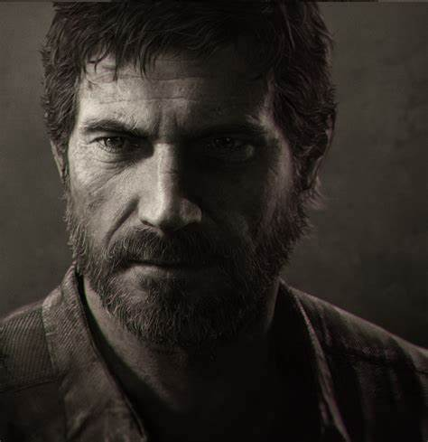

Joel Miller

Originario de Texas, Joel era un padre soltero cuando ocurrió el brote inicial de Cordyceps. Al huir con su hermano Tommy y su hija Sarah de doce años, se vieron envueltos en un tiroteo con un soldado y Sarah resultó con una herida fatal y murió en sus brazos, dejándolo traumatizado.
Edad:
- 31 (Prologo)
- 51 (Part I)
- 56 (Part II)
Tess
Tess nació en Rockford, Illinois, el 26 de febrero de 1982. Después del brote de infección cerebral por Cordyceps, Tess se convirtió en contrabandista en la zona de cuarentena de Boston, viviendo en el Área 4. Mientras estaba allí, conoció a Joel.